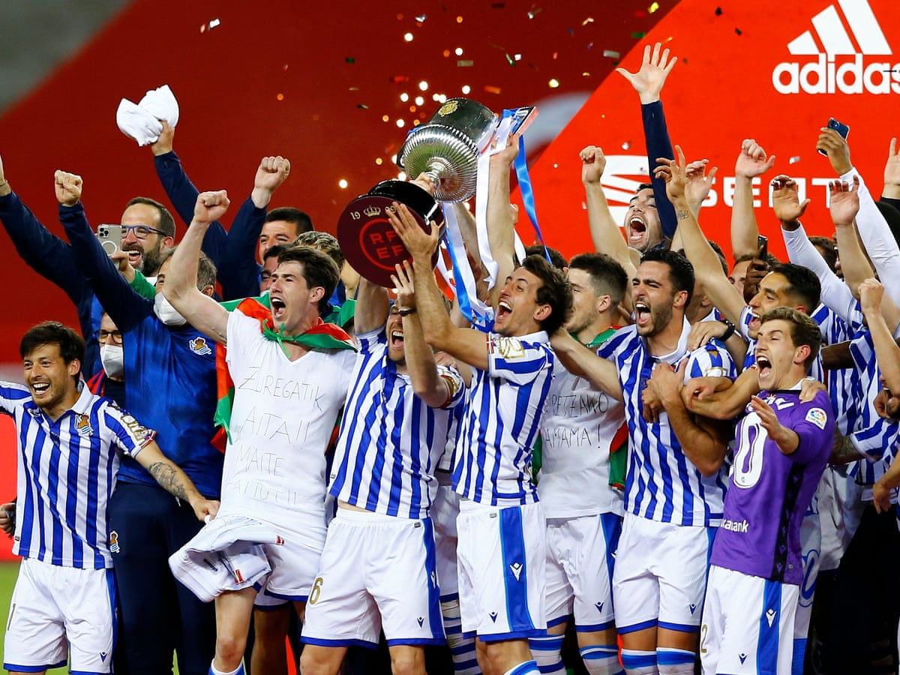
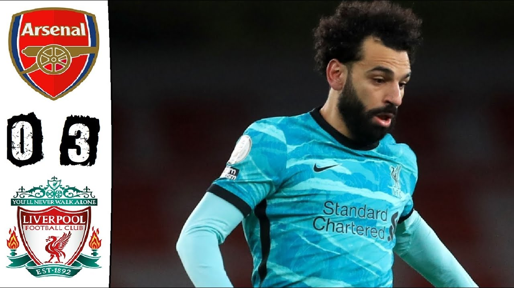
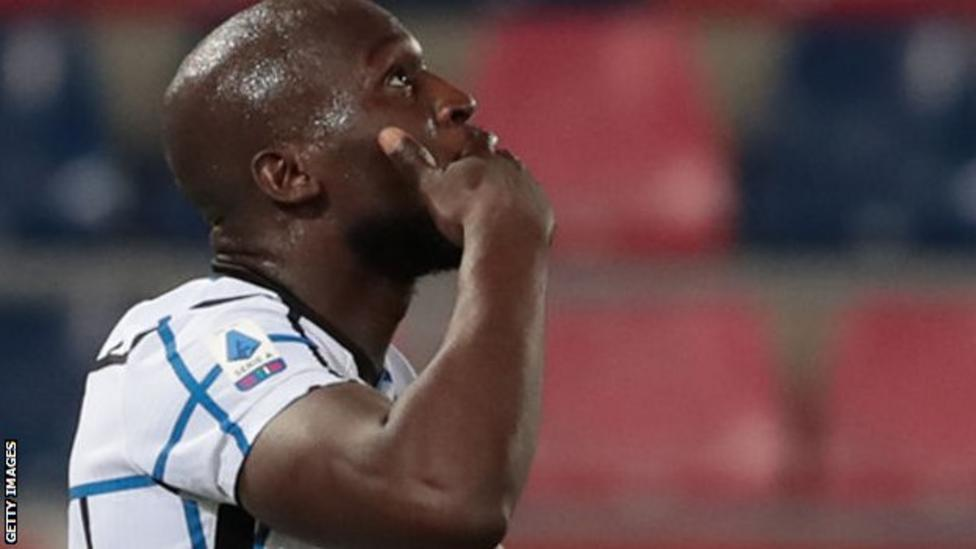

Karim Benzema continued his rich scoring form as Real Madrid warmed up for Tuesday's Champions League fixture against Liverpool with victory over Eibar. The Frenchman recorded his 24th goal of the season with a firm header from eight yards in the 73rd minute. Marco Asensio scored the opener when he slotted in from midfielder Casemiro. The win moves Real to within three points of leaders Atletico Madrid, who are at Sevilla on Sunday.
Real Sociedad ended a 34-year wait for the Copa del Rey by beating Athletic Bilbao in a tight final in Seville. After a five-minute VAR review of the decision to award a penalty, Mikel Oyarzabal sent the keeper the wrong way to win the 2019-20 trophy for Sociedad. Inigo Martinez was initially sent off for fouling Portu in the box but the decision was downgraded to a yellow. Bilbao face Barcelona in this season's final on 17 April, looking to end their own 37-year wait in the competition. In a game of few chances, Martinez came closest for Bilbao with a 25-yard effort that was tipped over the bar in the first half. Former Manchester City midfielder David Silva played 85 minutes for Sociedad while ex-Arsenal left-back Nacho Monreal lasted the full game. The two sides meet again in La Liga on Wednesday, with Sociedad currently sixth and Bilbao ninth.
Three second-half goals, including two from sub Diogo Jota, strengthened Liverpool's top-four hopes with a dominant 3-0 win over a tame Arsenal at the Emirates.
Inter Milan went eight points clear at the top of Serie A thanks to Romelu Lukaku's first-half effort away to Bologna. Lukaku tapped home in the 31st minute after his powerful header was initially kept out by keeper Federico Ravaglia. Bologna offered little in response, while Inter's Lautaro Martinez struck the post after 50 minutes. The win means Antonio Conte's take another step towards their first league title since 2009-10. Elsewhere, title rivals Milan could only rescue a late point against Sampdoria on Saturday.